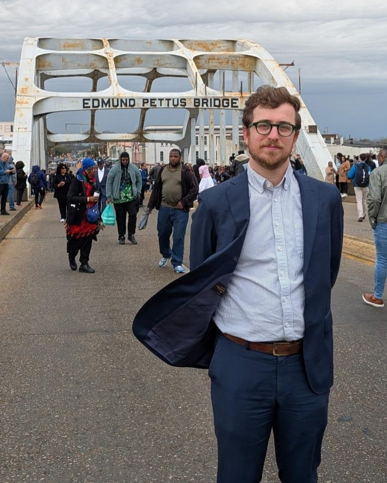

Kevin T. Morris, PhD
Senior Research Fellow & Voting Policy Scholar · Brennan Center for Justice at NYU School of LawI'm a political scientist studying how laws, institutions, and political rhetoric shape who participates in American democracy—and who doesn't. My work spans voting rights, election administration, the criminal legal system, and the role of racial resentment in driving both voter suppression policy and public belief in election fraud.
My research draws on large-scale administrative and survey data, including individual-level voter files covering every federal election since 2008. This work has been published in journals including the American Political Science Review, Science Advances, and the Journal of Politics, and has informed congressional debate, federal litigation, and national policy discussions.
Selected Highlights
An American Problem
The Voting Rights Act's preclearance requirement—which compelled jurisdictions with histories of discrimination to prove that changes to their election systems would not harm minority voters—was suspended by the Supreme Court in 2013 in Shelby County v. Holder. This book traces the development and dismantling of that landmark protection and documents the consequences for American democracy.